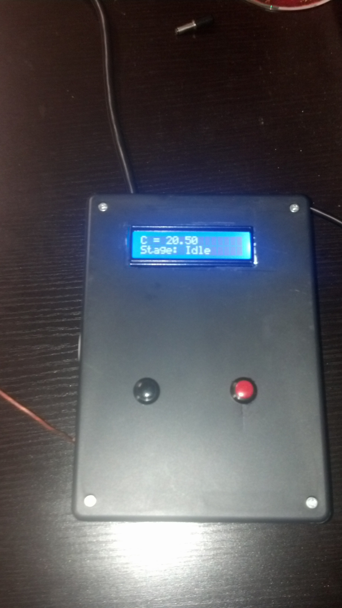
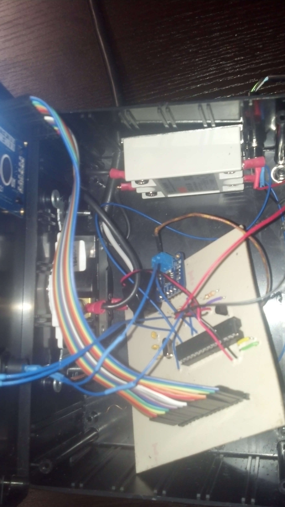

Projects I've Worked On
Predicting Bias in Machine Learned Classifiers Using Clustering
As part of my internship at The United States Military Academy, I had the opportunity to work along side professors and cadets to work on different projects. One of those projects included investigating bias in machine learned classifiers and finding methods that would identify these biases in datasets prior to classifier training. While this was exploratory research, we found that by using K-means clustering we could find potential sources of bias and then mitigate through manipulation of the dataset.
D2P2
Declarative to Procedural 2 is a Ruby on Rails implementation of a previous Java architecture. The main
purpose of D2P2 is to be an online tutoring system that is used to test various theories on learning.
Throughout this project I've worked on multiple technologies such as Ruby on Rails, JavaScript, SQL, and Unity.
Some of the main implementations I have contributed to this project include, creating different question
types (drag and drop ordered questions, and a JavaScript based matching game), implementing more user customization options
(allowing users to set background images on tutors and setting logo images), and integrating Unity projects into
the framework, allowing communication between the two platforms.
OPORD Generator
Another project I had the opportunity to work on at USMA was a Python program utilizing Natural Language Processing which was designed to take a document and break down its structure. The program would then generate a Microsoft Word document that would fill in the details of the document based on keywords that the user input.
NP Reflow Oven
 
The NP (North Penn) Reflow Oven was a graduation project I completed during my senior year of high school. It was done in part to offer future classes the ability to work with Surface Mount Devices (SMDs) as previously the classes only worked with through hole components. The idea was to simple take an off the shelf toaster oven and then plug it into a device that will monitor the internal temperature of the oven and have it follow specific heating profiles so that SMDs could be properly soldered. The main work of this project involved coding in Arduino C, but also gave exposed to PCB fabrication and circuit design.
IST 446 Game Development
During the spring of 2017 I was enrolled in a game design class at The Pennsylvania State University. Throughout the course we learned different concepts in game development and I focused mainly in using Unity for development. Two main projects came from this course, the first being a simple top-down 2D racing game to be exposed to Unity and C# programming. The second project 'Operation Polygon' is a more fleshed out top-down shooter game.